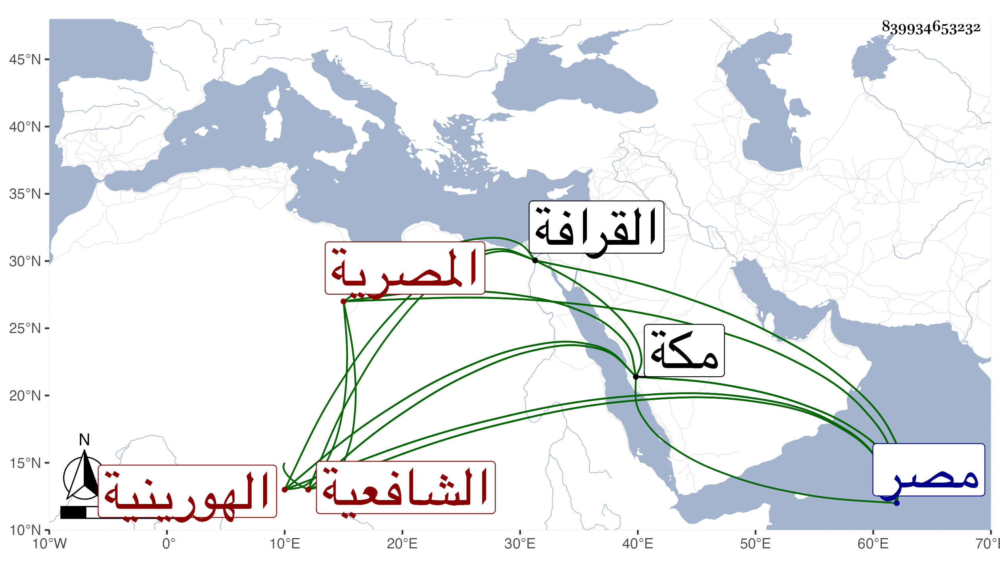

0902Sakhawi.DawLamic.ITO20230111-ara1.EIS1600.839934653232
Biography ID: 839934653232
980
أم هانئ ابنة العلامة نور الدين أبي الحسن علي بن القاضي تقي الدين عبد الرحمن ابن عبد المؤمن بن عبد الملك الهورينية الأصل المصرية الشافعية وتسمى مريم أيضا وهي سبطة القاضي فخر الدين محمد بن محمد القاياتي . ولدت في يوم الجمعة ليلة نصف شعبان سنة ثمان وسبعين وسبعمائة بمصر واعتنى بها جدها لأمها فأسمعها بمكة في سنة خمس وثمانين على النشاوري الكثير وعلى أبي العباس بن عبد المعطي والشهاب بن ظهيرة والمحب الطبري المتأخر وبمصر على ابن الشيخة والسويداوي والنجم بن رزين والصلاح الزفتاوي وابن أبي زبا وسمعت منه نفسه ومن البدر بن الصاحب وآخرين ، وأجاز لها العراقي والهيثمي وابن الملقن وابن حاتم والعزيز المليجي والصردي وأبو اليمن بن الكويك والصلاح البلبيسي والبرهان الآمدي والابناسي والمجد إسماعيل الحنفي والغماري وغيرهم ؛ وتزوجت بالحسام محمد بن الركن عمر بن قطلوبغا البكتمري فولدت له شجاع الدين محمدا الشافعي ثم سيف الدين محمدا الحنفي ثم فاطمة ثم الشرف يونس المالكي ثم منصور الحنبلي واشتغل كل من المذكورين وتمذهب لما وصف به ومهر من بينهم الحنفي ومات الحنبلي وهو صغير وكان غاية في الذكاء بحيث قيل قتله ذكاؤه . ولما مات زوجها تزوجها البدر حسن بن سويد المالكي واستولدها أحمد وعزيزة واستولى على تركة جدها القاياتي وتصرف فيها ما شاء ومات فورثته واشترت القاعة الشهيرة على بركة الفيل وتعرف بإنشاء الأكرم وهم غية في الاتساع وكثرة المغازل وفيها ما يدل على أنها كانت في غاية التزخرف ونازع بعض ذرية الواقف في صحة استبدالها وجرت بسبب ذلك منازعات آل الأمر فيها إلى أن حكم المحب بن نصر الله الحنبلي بصحة الاستبدال وابقائها بيدها ، وقد حدثت قديما سمع عليها الفضلاء وقرأت عليها جميع ما وقفت عليه من مرويها وعندي أنها سمعت أكثر مما وقفت عليه بل أستبعد أن جدها أسمعها باقي الكتب الستة ومن ذلك على النشاوري صحيح البخاري لكن ما ظفرت بزيادة على ما علمته ، وهي امرأة صالحة خيرة فاضلة كثيرة النحيب والبكاء عند ذكر الله ورسوله محبة في الحديث وأهله مواظبة على الصوم والتهجد متينة الديانة كثيرة التحري في الطهارة فصيحة العبارة مجيدة للكتابة ولديها فهم وإجادة لإقامة الشعر بالطبع ، حفظت القرآن في صغرها ومختصر أبي شجاع في الفقه والملحة في الإعراب وغيرها ، وسمعنا من لفظها وحفظها سورة الصف بفصاحة وحسن تلاوة ، وحجت ثلاث عشرة مرة وجاورت في بعضها وكفت من زمن طويل فصبرت واحتسبت ثم أقعدت وقام ولدها الحنفي بإكرامها وخدمتها أتم قيام حتى ماتت وأنا بمكة في السبت الثلاثين من صفر سنة إحدى وسبعين ودفنت بتربة جدها الفخر القاياتي بالقرب من مقام أمامنا الشافعي من القرافة رحمها الله وإيانا .
